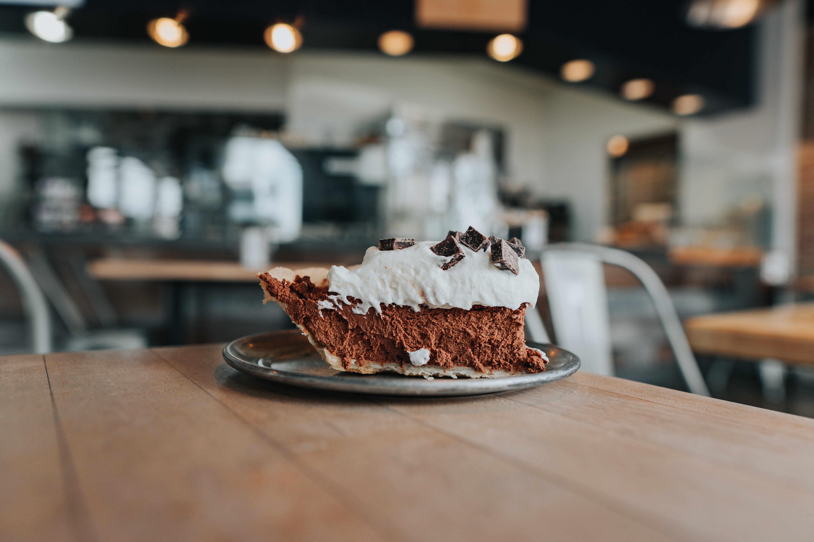

Chocolate Pie

About Chocolate Pie
A choco pie is a snack cake consisting of two small round layers of cake with marshmallow filling and a chocolate covering. The term originated in America but is now also used widely in South Korea, Japan, and its exports, and many other countries as either a brand name or a generic term.
Ingredients
- 1 (9 inch) pie shell, baked
- 1 (5 ounce) package non-instant chocolate pudding mix
- 2 cups low-fat milk
- 1 (8 ounce) container frozen whipped topping, thawed
- ¼ cup chocolate shavings
How to make it
- Prepare pudding according to package directions. Cover pudding with wax paper and allow to cool for 5 minutes.
- Pour pudding into pie shell and refrigerate until cool.
- Top with whipped topping before serving. Garnish with chocolate shavings.